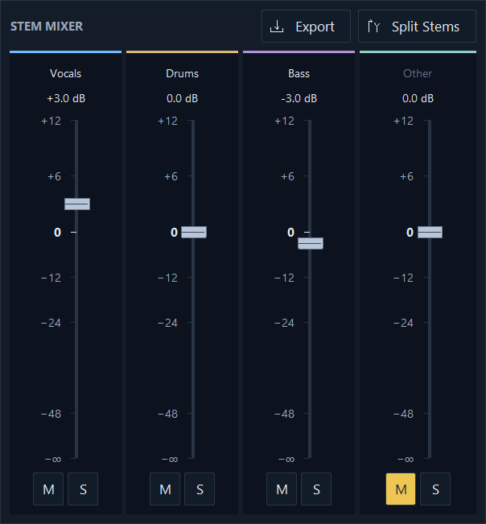
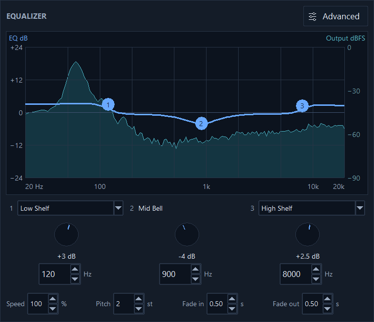
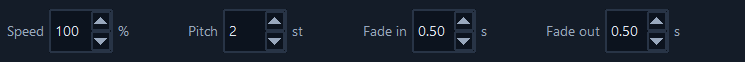
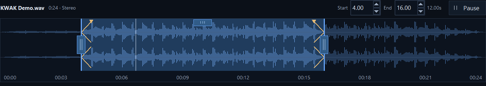

KWAK Split is a full stem workshop — separate, EQ, retune, retime, and export, all before you ever hit generate. Here's every knob.
SEPARATE ✕ SHAPE ✕ RETUNE ✕ RETIME ✕ RANGE ✕ FADE ✕ RENDER ✕ REPEAT ✕ SEPARATE ✕ SHAPE ✕ RETUNE ✕ RETIME ✕ RANGE ✕ FADE ✕ RENDER ✕ REPEAT ✕
SEPARATE ✕ SHAPE ✕ RETUNE ✕ RETIME ✕ RANGE ✕ FADE ✕ RENDER ✕ REPEAT ✕ SEPARATE ✕ SHAPE ✕ RETUNE ✕ RETIME ✕ RANGE ✕ FADE ✕ RENDER ✕ REPEAT ✕
01 — SEPARATION
STEM SPLIT
One pass pulls your track into four clean stems — vocal, drums, bass, and everything else. Each lands on its own fader with mute and solo, and Export saves all four as separate files.
PER-STEM FADERS
MUTE & SOLO
4-TRACK EXPORT
ON-DEVICE

▚ STEM MIXER — VOCAL / DRUMS / BASS / OTHER

▚ EQUALIZER — LOW · MID · HIGH
02 — TONE
3-BAND EQ
Low shelf or high-pass, mid bell, and high shelf or low-pass, with a live response curve over the playing spectrum. Carve mud out of a bassline, tame a harsh vocal, or brighten a stem while it plays.
HP / LP FILTERS
BELL & SHELF
ADJUSTABLE Q
±24 dB / BAND
03 — TIME & KEY
PITCH & SPEED
Move key and tempo independently. Nudge a hook up two semitones, or slow a loop down to half-time without the chipmunk effect.
± 12 SEMITONES
50–200% SPEED
INDEPENDENT

▚ CONTROLS — SPEED · PITCH · FADES

▚ WAVEFORM — RANGE HANDLES · ZOOM
04 — OUTPUT
RANGE, FADES & EXPORT
Scrub the waveform, select a range, set fades, and render exactly the slice you want. WAV when you need the quality, MP3 when you need it small — both drop straight into your AI tool.
RANGE SELECT
FADE IN / OUT
WAV & MP3
SUNO-READY
EXPORT ALL FOUR STEMS
Stem Mixer → Export saves each stem as its own WAV or MP3, with your faders, EQ, speed, pitch and fades applied.